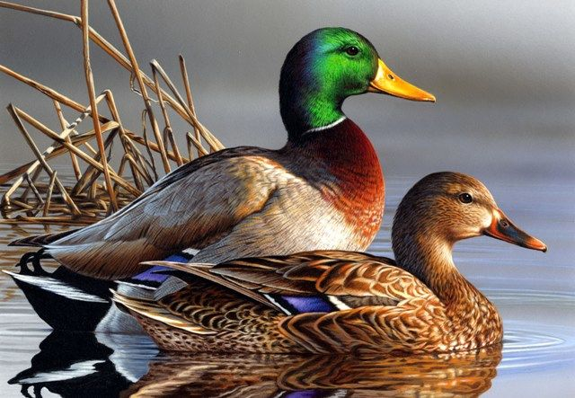
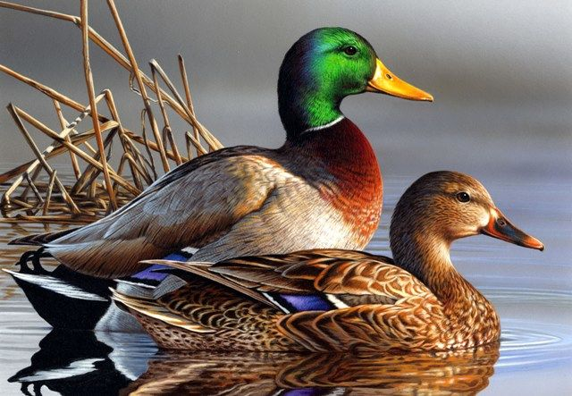

نژاد اردک ها
نژاد سفید
منشأ این نژاد کشور چین است و اولین بار در سال ۱۸۷۳ به عنوان یک نژاد مشخص معرفی شدهاست و در حال حاضر بیشتر مزارع پرورش اردک گوشتی در آمریکا از این نژاد استفاده میکنند. وزن اردک نر بالغ در حدود ۴ تا ۵/۴ کیلوگرم و اردک ماده بالغ ۶/۳ تا ۴ کیلوگرم است. این نژاد تخمگذار خوبی نیز هست بهطوریکه سالیانه بین ۱۵۰ تا ۱۸۰ عدد تخم میگذارد و وزن هر یک عدد تخم آن در حدود ۸۵ گرم بوده و رنگ پوسته آن سفید کرمی یا سبز فام است. این نژاد دارای بدنی کشیده و سینهای پهن بوده و رنگ آن سفید کرمی و رنگ پوست آن زرد و رنگ منقار و پاها پرتقالی است. وجه تمایز اردک نر از ماده، وجود دو پر کوچک تابیده در منتهای الیه دُم است. امتداد بدن از شانه به طرف پشت، شیب دار بوده و در حقیقت قسمت انتهایی بدن ودم نزدیک زمین قرار گرفتهاست. این طرز ساختمان بدن و همچنین طرز راه رفتن، پرنده را شبیه به پنگوئنها میسازد. طرز ساختمان بدن سبب شدهاست که حیوان نتواند به آسانی بر روی زمین جفتگیری کند از این رو برای جفتگیری باید به آب برود. بهترین سن برای عرضه در بازار سن ۸ تا ۱۲ هفتگی است و در این سن وزن اردک بین ۲ تا ۳ کیلوگرم خواهد بود، و پس از آن به تدریج از کیفیت گوشت کاسته میشود. این نژاد آرام بوده و شرایط محیطی را به خوبی تحمل میکند و در مقایسه با سایر نژادها از بال کوچکتری برخوردار است و زیباتر به نظر میرسد. مرغابی ماده علاقه چندانی به خوابیدن بر روی تخمهایش ندارد.
نژاد طنصری
اردکی تنبل و سنگینوزن از اردکهای نژاد گوشتی است که منشأ آن دره ایلزبری در حومه شهر لندن در انگلیس است، و وزن اردک نر آن در حدود ۴٫۵ کیلوگرم و وزن اردک ماده در حدود ۴ کیلوگرم است. این نژاد برای تولید گوشت مناسب است. اردک ایلزبری منقاری بلند، راست و به رنگ سفید صورتی فام، و پاهای پرتقالی رنگ دارد و برخلاف رنگ پوست سایر نژادهای اردک که معمولاً زرد است رنگ پوست اردک ایلزبری سفید است. میزان تولید تخم آن سالیانه در حدود یکصد عدد تخم است.


 
